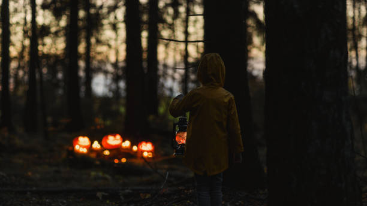

Once upon a time, in the dead of night, a young boy named Sam found himself lost in the dark, foreboding woods. The trees towered above him, their gnarled branches casting eerie shadows on the ground below. Sam had been playing with his friends in the woods all day, but as the sun began to set, they realized they had ventured further than they had ever gone before. Panic set in as they searched for a way out, but eventually, Sam became separated from the group. Now, alone and afraid, Sam stumbled through the darkness, his heart pounding in his chest. He could hear strange noises all around him – the hooting of owls, the rustling of leaves, and the howling of wolves in the distance. Suddenly, he saw a faint light up ahead. Hoping it was a sign of civilization, Sam hurried towards it. But as he got closer, he realized that the light was coming from an old, abandoned cabin. Sam hesitated, but his curiosity got the better of him. He pushed open the creaky door and stepped inside. The cabin was musty and dark, with cobwebs hanging from the ceiling. In the corner, he saw an old rocking chair, slowly swaying back and forth. Suddenly, the chair stopped rocking and turned towards him. A figure emerged from the shadows, its eyes glowing red in the dim light. Sam gasped in terror, but the figure just smiled at him. "Don't be afraid, Sam," it said in a low, gravelly voice. "I've been waiting for you." Sam tried to run, but his legs wouldn't move. He was frozen in fear as the figure approached him, its long, bony fingers reaching out towards him. Just as the figure was about to touch him, Sam woke up with a start. It was all just a nightmare. But the memory of those glowing red eyes stayed with him, haunting his dreams for years to come.
